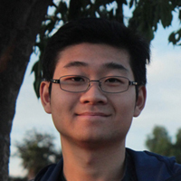

About Me
CS Undergrad @ USC

Summary Bio
Hi i'm Nian! I have been interested in computers and programming since I was a kid. I like going beyond what is being taught in classrooms to fufill my intellectual curiosity for more cool technologies.
Click here for resumeUniversity of Southern California
Los Angeles, California
Viterbi School of Engineering
B.S. Computer Science
Expected Graduation: May 2021
Involvement:
ACM, MEGA, VRSC, CASA, KASA, Freshman Dance Off 2k18
King's College
Auckland, New Zealand
<Under Construction>
Dulwich College Beijing
Beijing, China
<Under Construction>